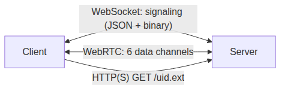

6. The Teleport Protocol¶
The Teleport Protocol is a network protocol for client-server immersive applications. Essentially this means that applications can be used remotely without downloading or installing them. The protocol is open, meaning that anyone can use it, either by writing a client program or by developing a server that uses the protocol.
Teleport is a top-level application-layer protocol. It uses three transport layers in parallel: a WebSocket connection for signaling, a media/data transport (WebRTC by default, with optional SRT/EFP support) for real-time streams, and an HTTP(S) service for static asset retrieval.
Teleport XR |
Real-time client-server interface of a virtual world. |
WebSocket / WebRTC / HTTP(S) |
Signaling, real-time data channels, and static asset transfer. |
TCP / UDP / TLS / DTLS-SRTP / SCTP |
Standard transports underlying the above. |
Network, Data Link, Physical Layer |
Standard network layers |
Teleport XR Ltd provides reference implementations of both client and server. The protocol and software should be considered pre-alpha, suitable for testing, evaluation and experimentation.
The protocol uses three concurrent connections between a client and server:
Signaling |
A WebSocket connection (JSON, with optional binary frames) used to discover the server, negotiate the media/data transport, and exchange a small number of out-of-band messages while streaming. |
Data Service |
The real-time transport. The reference implementation uses WebRTC data channels; see Data Transfer. It carries six logical streams (video, video tags, audio, geometry, reliable commands/messages, unreliable messages). |
Static Data (HTTP) |
An HTTP or HTTPS service used to retrieve large assets
(textures, meshes, materials) by |
The Signaling connection is established first; the Server then sends a Setup Command which contains the parameters needed by the Client to attach to the Data Service and the HTTP service.
